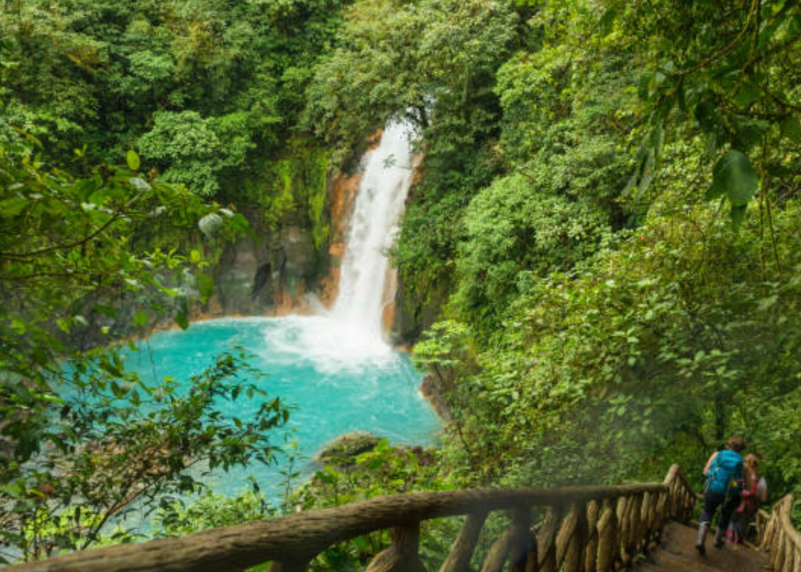

This Puntarenas shore excursion blends rainforest canopy experience — trails, hanging bridges or adventure park walkways — with the wildlife-rich Tarcoles River. You get both elevated forest perspective and river-level crocodile and monkey viewing in one full day, making it a top choice among Puntarenas rainforest tours for cruise passengers.
Tour details are provided on confirmation. Always check your cruise ship arrival and departure times before booking.
Cruise Passenger Snapshot
- Duration
- Approx. 7 hours
- Activity level
- Easy
- Best for
- Canopy + river wildlife combo
- Food/drink
- Meal included on most departures
- Return-to-ship confidence
- High — standard full-day format
- Walking level
- Light to moderate on canopy trails
Why cruise passengers choose this tour
- Two ecosystems in one day — rainforest canopy and river
- Easier pacing than horseback or zip line adventures
- Strong monkey and crocodile viewing opportunities
- Included meal simplifies your port day planning
- More nature depth than the general Best of Costa Rica tour
Good to know before booking
- Canopy sections may include stairs and hanging bridges
- Not the same as Monteverde cloud forest — regional Central Pacific forest
- Shared coach format with other cruise guests
- Some vertigo on bridges — assess your comfort level
- Pure river focus? See crocodile safari
What to bring
- Sturdy walking shoes with grip
- Binoculars and camera
- Insect repellent and rain layer
- Small day pack for canopy walk
- Sun protection for open sections
Who this tour is best for
Nature-focused passengers who want rainforest immersion plus river wildlife without extreme adventure. Excellent for families with school-age children and anyone seeking Puntarenas rainforest tours with crocodile viewing included.
Who should choose a different tour
Passengers uncomfortable with heights on bridges should choose the river-only safari. Active travelers may prefer horseback and safari combo. Private groups: Private Highlights.